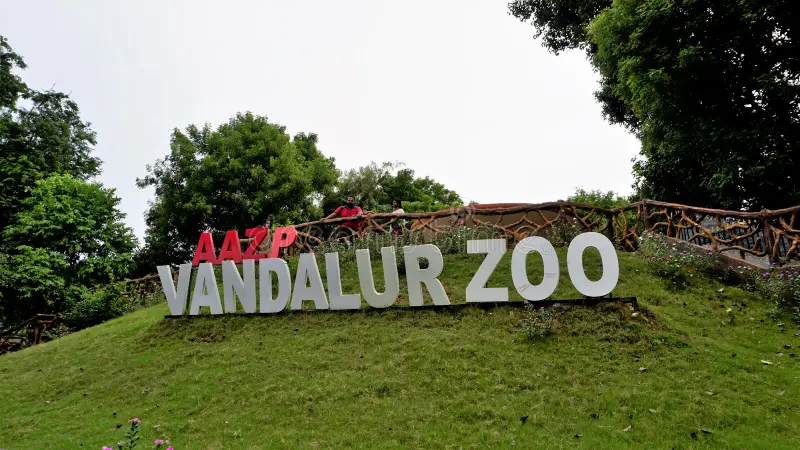

B.Tech CSE | Wanderly User
Located in Vandalur, this is one of the largest zoological parks in India, spread across more than 600 hectares. The zoo is home to hundreds of species including lions, tigers, elephants, reptiles, and exotic birds. It is a perfect destination for families, students, and wildlife enthusiasts.

Simple and quick bites for visitors.
Refreshing ice creams available across the zoo, especially near resting zones.
Quick snacks like chips, biscuits, and cool drinks available at multiple kiosks.
Simple and affordable meals including rice, sambar, and curd served at the food court.
Fresh fruit juices and tender coconut water available near major walking routes.
Soft toys shaped like tigers, elephants, and pandas—perfect for kids.
Affordable animal-themed keychains available at zoo gift shops.
Educational posters of animals, birds, and reptiles found in the zoo.
Reusable bottles and eco-friendly products promoting wildlife awareness.
Observe lions, tigers, elephants, and exotic birds in natural enclosures.
Rent bicycles to explore the vast zoo comfortably.
Use electric vehicles to move around the zoo without long walks.
Capture amazing shots of animals in spacious habitats.
A huge zoo with lots of animals. The cycle ride made the visit very easy.
Great place for families and kids. Clean environment and well-maintained enclosures.
One of the best zoos in India. Loved the lion and elephant sections.